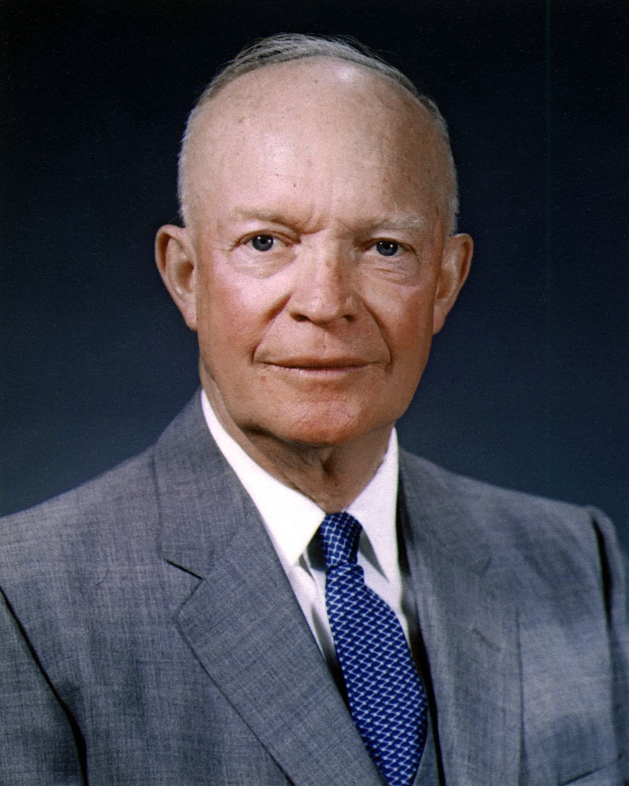
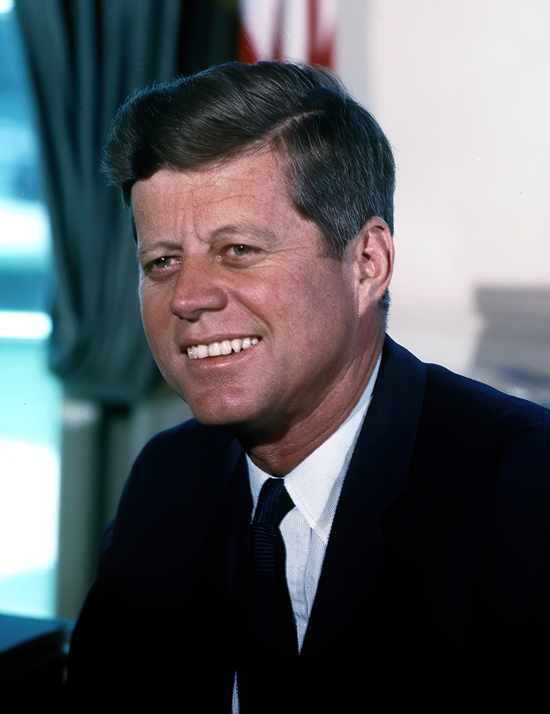

Home
News
The 1950s to the 2000s
Dwight D. Eisenhower
- Originally had his middle name be his first but later decided to switch them
- He only purchased a house after he became president due to his millitary career
- Loved golfing

John F. Kennedy
- Was the first Catholic President
- Received last rites four times before becoming president
- Doesn't have his brain in his body

Lyndon B. Johnson
- Both him and his wife have the same initials that being LBJ with his wife called Lady Bird Johnson
- He became president and ran for reelection on the same year
- He is one of four people to hold Distinguished Offices

Richard M. Nixon
- He is one of only two people to appear on the national presidential ticket five times
- Was the first president to visit a nation not recognized by the goverment that being China
- Loved rap and wanted to be a rapper

Gerald R. Ford
- He played football at the University of Michigan
- Was born as Leslie Lynch King Jr but changed it
- Was a Boy Scout and earned the highest rank of Eagle Scout
Jimmy Carter
- First president born in a hospital
- Most people belive he did more after he became president then when he was president
- Was a peanut farmer

Ronald Reagan
- Previously a famous actor before he became president
- Loved Jelly Beans
- Worked as a lifeguard for 7 years saving 77 lives

George H.W Bush
- Was first person elected to become president since Martin Van Buren who was the sitting vice president
- When he became a Navy pilot in 1943 he was the youngest person to become one
- Vomited on the lap of Japan's prime minister at a state dinner

Bill Clinton
- Was the first Democratic president to be for elected two terms since Franklin D. Roosevelt
- First president to have a email address
- When eating an apple he eat all of it core included